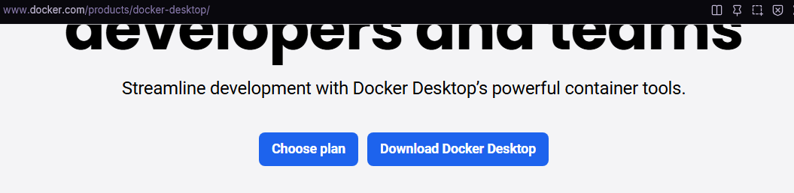
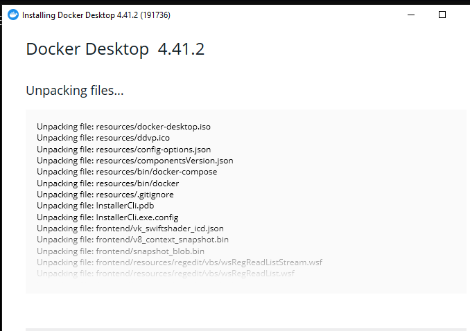
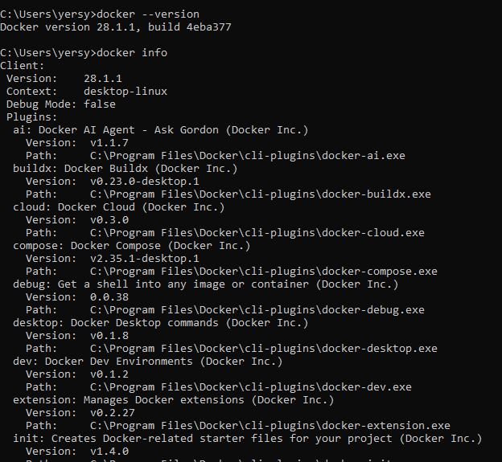
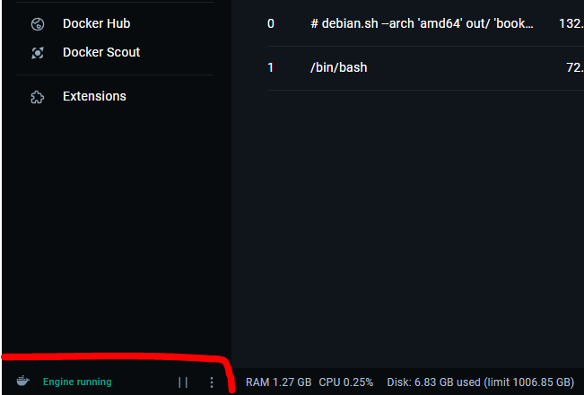
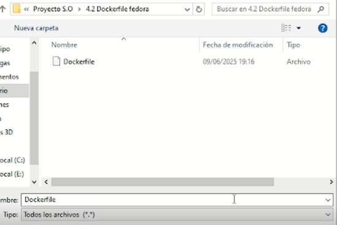
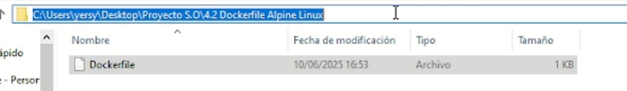
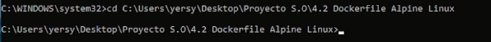
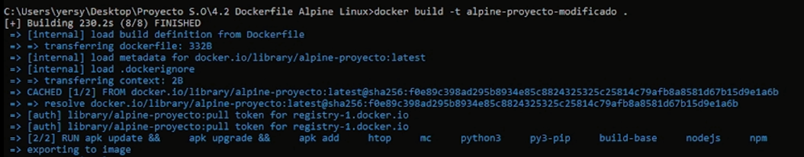
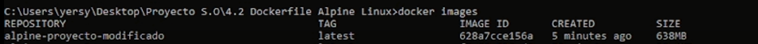

- 4.1 Instalación de Docker Desktop Ver video
- Capturas y comandos explicados
1. Descargar el instalador de Docker Desktop

2. Ejecutar el instalador de Docker Desktop

3. Ejecutar el comando: docker --version y docker info.
Para conocer la version y la informancion de Docker que acabamos de instalar

4. Activamos el subsistema de windows para linux con el comado:
dism.exe /online /enable-feature /featurename:Microsoft-Windows-Subsystem-Linux /all /norestart
4.1 Ejecutamos El comando wsl -l -v:
se utiliza para listar todas las distribuciones de Linux instaladas en WSL, mostrando su nombre, estado
(en ejecución o detenida) y la versión de WSL (1 o 2) que están usando.
5. ejecutamos docker desktop y verificamos que este corriendo el docker engine.
Como se muestra en la imagen.

- 4.2 Creación de imagen Docker y 4.3 Creación de contenedor Ver video
- Capturas y comandos explicados
1. Creación del Dockerfile.
En el Dockerfile indicamos las intrucciones con las que se va a construir nuestra imagen de Apline Linux.

2. Guardamos nuestro Dockerfile sin ningun tipo de extencion en una carpeta de nuestra preferencia.

3. Copiamos la ruta de la carpeta donde guardamos nuestro Dockerfile.

4. Accedemos a la carpeta desde el CMD.
para este paso debemos escribir el comando: cd "la ruta de la/carpeta/donde/se/encuentra/dockerfile"

5. Creacion de la imagen apartir del Dockerfile.
para este paso debemos escribir el comando: docker build -t "nombre de nuestra preferencia" . (el punto al final es importante)

6. verificamos con el comando: docker images.

7. Ejecutamos un contenedor interactivo basado en nustra imagen de docker.
Para este paso debemos escribir el comando: docker run -it --name "nombre de preferencia" "nombre de nuestra imagen" /bin/bash
Luego verificamos las versiones de la aplicaiones inataladas previamente en nuestra imagen para esto debemos escribir el comando: "nombre de la aplicion" --version
Ejemplo: nano --version.
salimos del contenedor con el comando: exit.

- 5.1 Modificación de imagen y 5.2 Publicación en Docker Hub Ver video
1. Creamos un nuevo Dockerfile.
En el Dockerfile indicamos que modifique la imagen previamente creada e instale en editores de codigo como lo son: pyton3, nodejs etc.
2. Guardamos nuestro Dockerfile sin ningun tipo de extencion en una carpeta de nuestra preferencia.

3. Copiamos la ruta de la carpeta donde guardamos nuestro Dockerfile.

4. Accedemos a la carpeta desde el CMD.
para este paso debemos escribir el comando: cd "la ruta de la/carpeta/donde/se/encuentra/dockerfile"

5. Creacion de la imagen apartir del Dockerfile.
para este paso debemos escribir el comando: docker build -t alpine-proyecto-modificado . (el punto al final es importante)

6. verificamos con el comando: docker images.

7. Ejecutamos un contenedor interactivo basado en nustra imagen de docker previamente modificada.
Para este paso debemos escribir el comando: docker run -it --name "nombre de preferencia" alpine-proyecto-modificado /bin/bash
Luego verificamos las versiones de la aplicaiones inataladas
previamente en nuestra imagen para esto debemos escribir el comando: "nombre de la aplicion" --version.
Ejemplo: pyton3 --version.
salimos del contenedor con el comando: exit.
8. Subir la imagen a Docker Hub.
Para esto primero debemos hacer login con el comando: docker login -u "nobre de usuarion en Docker Hub" y luego escribimos nuestra contraseña.
9. Etiquetar la imagen con nuestro nombre de usuario.
Para esto primero debemos Ejecutar el comando: docker tag "nombre de nuestra imagen" "nombre de usuario en docker hub"/"nombre de nuestra imagen":latest.
Ejemplo: docker tag alpine-proyecto-modificado julianalexis/alpine-proyecto-modificado:latest
Verificamos que se etiquete correctamente nuestra imagen con el comando: docker images.
10. Subir la imagen etiquetada a Docker Hub.
Para este paso debemos ejecutar el comando: docker push "imagen etiquetada con el nobre de usuario".
Ejemplo: docker push julianalexis/alpine-proyecto-modificado.
11. Visualizar la imagen en Docker Hub.
Para este paso accdemos a nuestro navegador, vamos a la pagina de Docker Hub luego a la seccion de repository y buscamos la imagen con el nombre colocado anteriormente.
Notas adicionales.
Alpine Linux es una distribución muy ligera basada en "musl libc" y "BusyBox",
lo que la hace ideal para contenedores Docker pequeños y seguros. Sin embargo, esa ligereza
trae limitaciones importantes al instalar aplicaciones grandes o complejas como:
- Atom
- Eclipse
- LibreOffice
Estas aplicaciones tienen muchas dependencias gráficas y bibliotecas que no están
disponibles en Alpine, o no son compatibles con musl libc
- Muchas aplicaciones como Atom y Eclipse están compiladas para sistemas basados en "glibc" como Debian, Ubuntu, Fedora.
- Debido a que Alpine Linux usa "MUSL" y NO utiliza GLIBC estas aplicaciones complejas o con
muchas dependencias genran errores al intentar su instalacion.
Se recomienda utilizar una imagen base más completa
si se necesita de esas aplicaciones, es mejor usar una imagen base como: ubuntu, debian o fedora.
- Ver imagen en Docker Hub: Ver imagen Alpine Linux